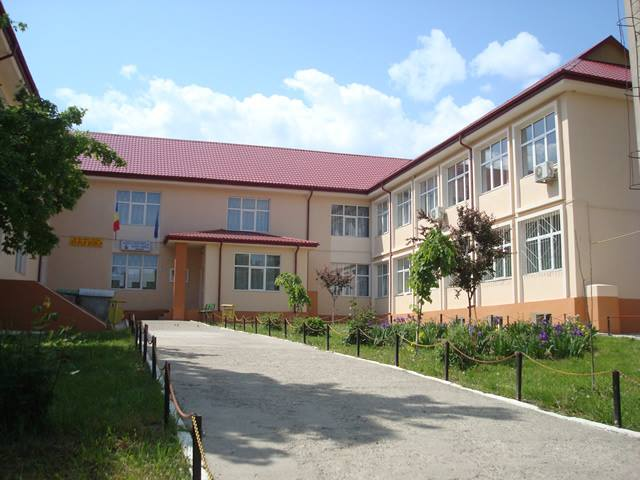

Istoric
Până în 1960-1961, funcționa, pe str. Grivița, nr. 15, o școală cu clasele I-IV, ca o continuare a școlii evreiești din cartier. Elevii absolvenți ai clasei a IV-a urmau apoi clasele gimnaziale la Școlile 3 sau 4 din Botoșani.
Începând cu anul școlar 1961-1962, se înființează clasa a V-a, cu două clase paralele, la care predau învățătorii școlii și profesori detașați de la alte unități din oraș.
În anul școlar 1962-1963, încep să funcționeze, pe lângă clasele primare, câte două clase a V-a și două a VI-a. Se fac primele încadrări pe catedre cu profesori tineri, iar astfel ia ființă Școala Nr. 8, Botoșani.
Urmare a activității unui Comitet de Inițiativă, pe baza unui Memoriu Justificativ, prin Dispoziția Nr. 52, din 05.01.2004, a Inspectoratului Școlar Județean Botoșani, școala părăsește șablonul numeric și adoptă denumirea de Școala cu clasele I-VIII, Nr. 8 „Elena Rareș” – Botoșani.
La această dată, denumirea școlii este Școala Gimnazială „Elena Rareș”.
La 15 septembrie 1966, o mare parte din cei 550 de elevi ai școlii se mută într-un local nou. Se dă în folosință Corpul A, din Parcul Tineretului (actualmente Tudor Vladimirescu, nr. 8).

Ca urmare a creșterii accentuate a numărului de elevi, în anul 1988-1989 se folosește ca spațiu de școlarizare și localul amenajat în corpul de clădire al Creșei din Parcul Tineretului.
La 15 septembrie 1993, intră în exploatare Corpul B (anexa), cu 12 săli de clasă.
În anul școlar 1974-1975, școala avea 874 de elevi la clasele I-VIII și, timp de un deceniu, populația școlară se menține aproximativ constantă, depășind totuși 800 de elevi.
Ne apropiem de 1000 de elevi în anul școlar 1987-1988.
În următorii cinci ani, odată cu extinderea și consolidarea Cartierului Grivița, numărul ajunge la 1902 elevi.
În anul școlar 1992-1993, școala școlarizează 2092 elevi.
Maximum-ul este atins în anul școlar 1996-1997, atunci când, cu cele 96 de clase I-VIII, în care învățau 2544 elevi, școala era cea mai populată din județ și una dintre cele mai mari din țară.
În prezent, școala funcționează cu 37 de clase (20 de învățământ primar și 17 de învățământ gimnazial), însumând aproximativ 1000 de elevi.
Despre Noi - O Comunitate Dedicată Excelenței
La Școala Gimnazială „Elena Rareș” din Botoșani, credem cu tărie că educația este cheia unui viitor luminos. Suntem mai mult decât o instituție de învățământ; suntem o comunitate vibrantă și dedicată, unde fiecare elev este încurajat să-și descopere și să-și atingă potențialul maxim. De peste șase decenii, școala noastră a fost un pilon al educației în Botoșani, formând generații de tineri pregătiți pentru provocările vieții.
Misiunea Noastră
Misiunea Școlii Gimnaziale „Elena Rareș” este de a oferi o educație de calitate, echilibrată și modernă, care să stimuleze dezvoltarea armonioasă a fiecărui elev. Ne propunem să cultivăm nu doar cunoștințe academice solide, ci și valori esențiale precum respectul, responsabilitatea, empatia și gândirea critică. Prin programe educaționale inovatoare și activități extracurriculare diverse, ne asigurăm că elevii noștri devin cetățeni activi, conștienți și pregătiți să contribuie pozitiv la societate.
Viziunea Noastră
Ne dorim ca Școala Gimnazială „Elena Rareș” să fie un centru de excelență educațională, recunoscut pentru standardele sale înalte de predare și învățare, pentru spiritul său inovator și pentru mediul său incluziv. Vizăm o școală deschisă către nou, care se adaptează constant provocărilor societății contemporane și care formează liderii și inovatorii de mâine.
De Ce Să Alegi Școala Gimnazială „Elena Rareș”?
- Cadre Didactice Dedicate: O echipă de profesori pasionați și experimentați, gata să inspire și să ghideze.
- Mediu de Învățare Stimulant: Săli de clasă moderne, dotări adecvate și un climat propice explorării și descoperirii.
- Activități Extracurriculare Diverse: Cluburi, concursuri, proiecte și evenimente care completează curriculumul național.
- Comunitate Unită: Colaborare strânsă între elevi, părinți și profesori, esențială pentru succesul educațional.
- Pregătire pentru Viitor: Focus pe dezvoltarea abilităților necesare în secolul XXI, de la gândire critică la competențe digitale.